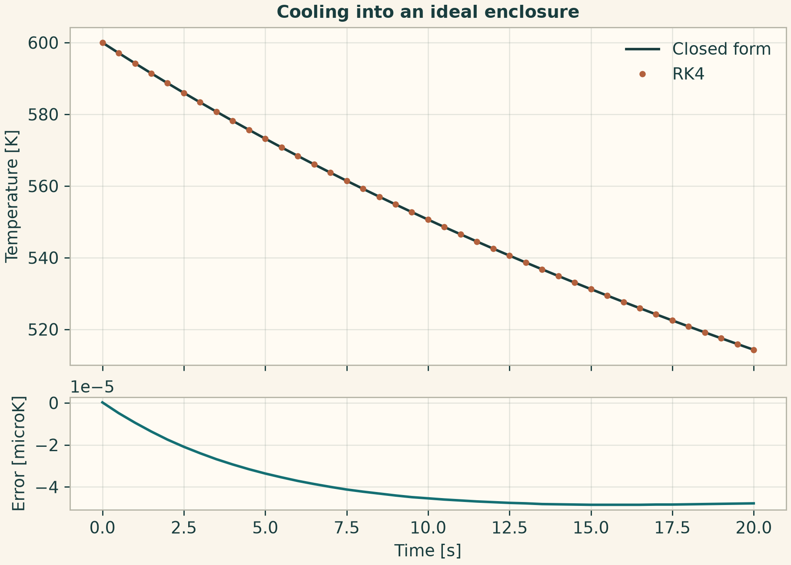
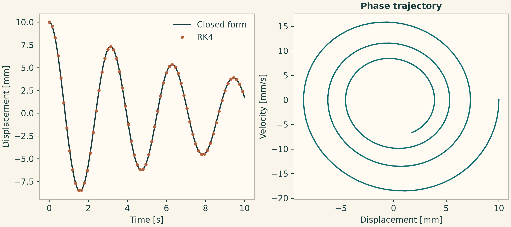
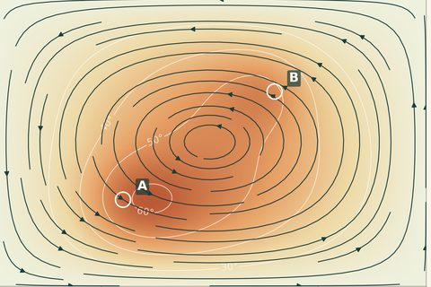
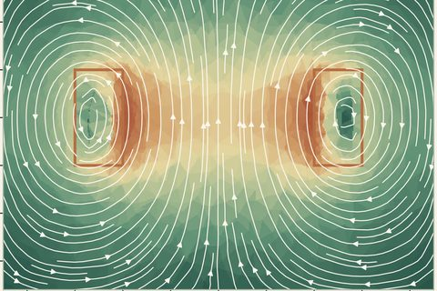
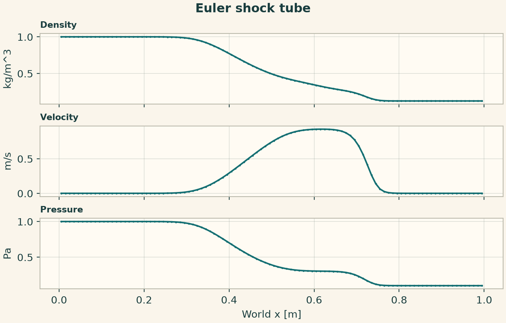
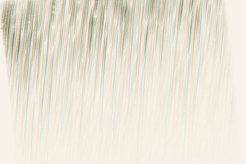
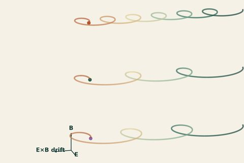
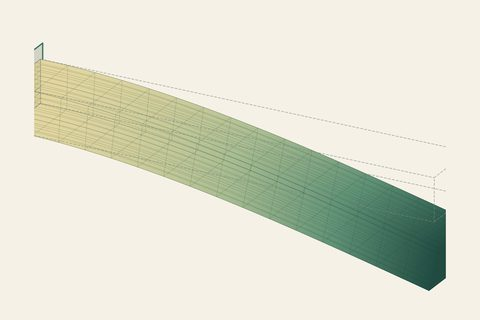

Docs › Examples › Downloadable notebooks
Downloadable notebooks
Nine real, tested examples to download as a Jupyter notebook or a plain Python script, free and without sign-up. Each one builds a model, solves it and checks the result against a reference.

Radiative cooling of a bodyHeat transfer · 0D. A body at one uniform temperature cools by radiation; the result is graded against the exact cooling law.
A damped spring–mass oscillatorSystems and dynamics · 0D. The classic linear oscillator m·ü + c·u̇ + k·u = 0, checked against its analytic solution and energy balance. A 3D cantilever beamSolid mechanics · 3D. A clamped 120×18×12 mm block under a 30 N end load: full 3D displacement and von Mises stress, with beam theory as a reference.
A 3D cantilever beamSolid mechanics · 3D. A clamped 120×18×12 mm block under a 30 N end load: full 3D displacement and von Mises stress, with beam theory as a reference.
Heat transport with recirculationHeat transfer · 2D. A steady temperature field with two heat sources, computed with and without a prescribed divergence-free flow.
The 3D field of a solenoidElectromagnetics · 3D. A homogenized ring coil carrying 1 A over 10 turns; the magnetic field solved with edge elements.
The Sod shock tubeCompressible flow · 1D. The 1D compressible Euler equations stated directly through the Python API, with WENO5 reconstruction and RK4 in time.
Vertical shear instability in a diskHydrodynamics · 2D. The time evolution of a small angular-momentum perturbation in a locally isothermal, rotating disk.
ECR plasma: coupled fieldsPlasma · 3D. A microwave-driven plasma: the frequency-domain Maxwell field, particle transport, electron energy, Poisson and three reactions solved together.
CAD from STEP: a sleeve under tensionSolid mechanics, CAD · 3D. A geometry read from a STEP file, meshed and solved for linear elasticity — the full path from file to checked result.What you need to run it. An installed, activated OneSimulation runtime (Python 3.13). As a student or course instructor, you have free access. Everyone else can start with the 7-day free trial. The notebook itself carries no key. These are numerical verifications against references, not experimental validation.